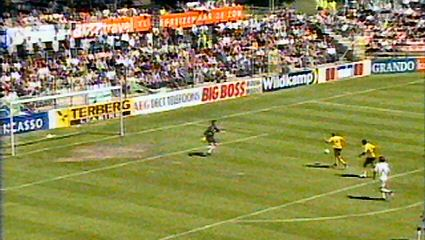
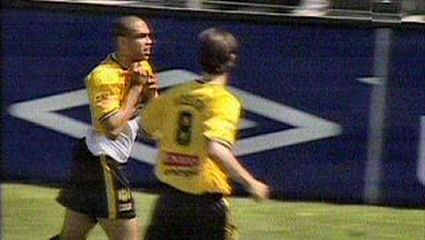
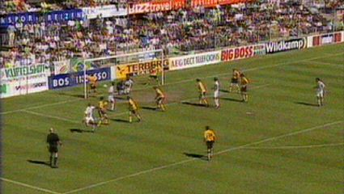
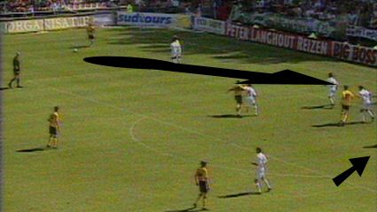
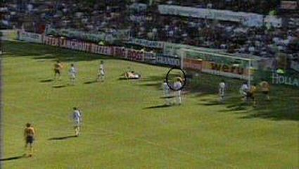
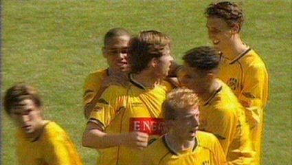
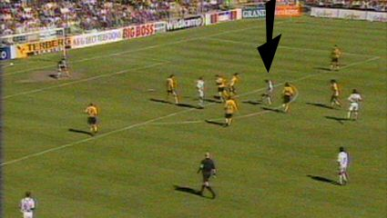

| FC Groningen - Roda JC (2-2) 16 mei 2004 |

Cristiano scoort 0-1 (15').

Daarmee is hij samen met Kone club-topscorer.

Gelijkmaker door Tuhuteru (60').
Hij is een van de vele spelers die bij FC Groningen weggaat.

Vrijetrap wordt verlengd door Vicelich en bereikt Van Dijk die
Roda weer op voorsprong brengt.

1-2, (82').

:-)

Zes minuten later haalt Van Gessel vernietigend uit: 2-2.
De competitie zit erop. Roda eindigt als zesde, een plaats te laag
voor UEFA voetbal, maar via de Intertoto is daar nog een kansje
op. Opmerkelijk is dat slechts 4 ploegen meer goals scoorden dan
Roda en dat eveneens slechts 4 ploegen minder tegentreffers
kregen. Verder verloor slechts de top 3 minder wedstrijden dan
Roda JC.
© Koempels
Pleasure Dome